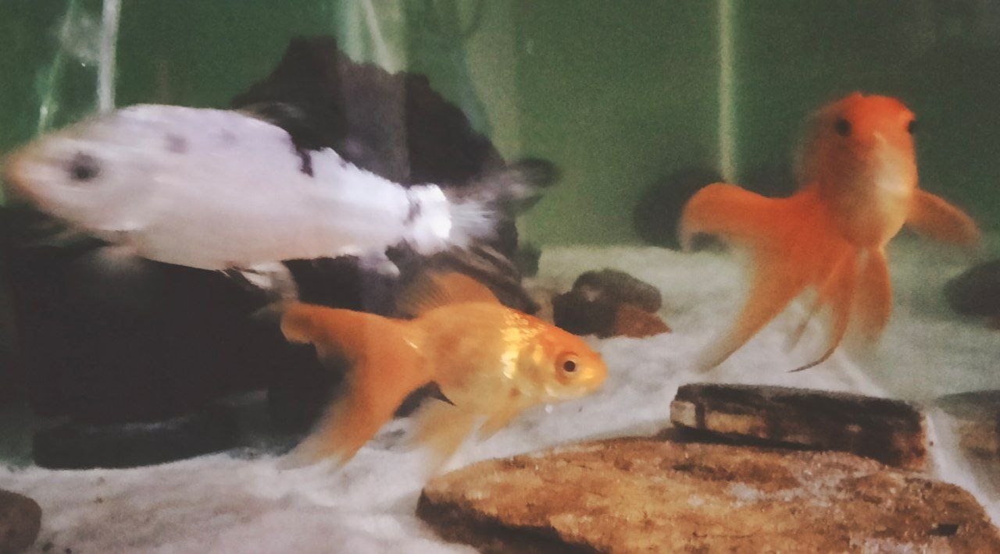
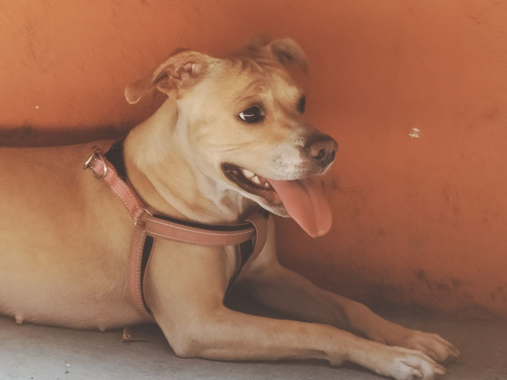

| Hola, mi nombre es Jefferson Portillo y tengo 18 años. Actualmente estoy estudiando en la Fundación Kinal. Este es mi segundo año en la carrera, equivalente al quinto grado, donde estoy aprendiendo a programar en varios lenguajes. Me apasiona jugar fútbol y siempre que tengo la oportunidad, aprovecho para salir a la cancha. Anteriormente tuve la oportunidad de jugar en los campos de Cejusa con una beca, pero debido a mis compromisos académicos ya no pude continuar entrenando. Además, sufrí una lesión durante un partido, lo cual afectó mi rendimiento y me impidió seguir entrenando por miedo a lesionarme nuevamente. En el fútbol, solía jugar de medio campo o defensa, a veces incluso como delantero, aunque no era mi posición favorita debido a que no me sentía cómodo y no me posicionaba bien. Me gustaba recibir pases largos para iniciar jugadas desde la defensa y trabajar junto con mis compañeros para convertirlas en goles. | ||
|---|---|---|
| Jefferson Portillo 20/03/2006 |
 |  |
| Mis mascotas actuales |